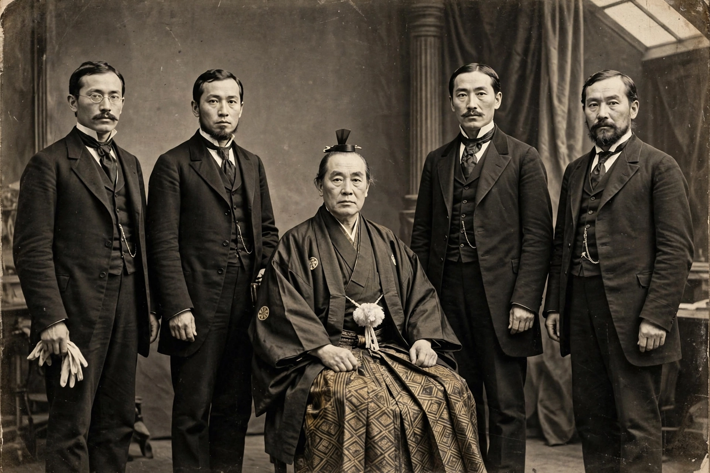

Iwakura Mission
| Dates | 23 December 1871 – 13 September 1873 |
|---|---|
| Leader | Iwakura Tomomi |
| Members | About 50 officials, plus students |
| Countries visited | United States, Britain, France, Belgium, Netherlands, Germany, Russia, Denmark, Sweden, Italy, Austria, Switzerland |
| Purpose | Treaty revision; study of Western institutions |

The Iwakura Mission or Iwakura Embassy (岩倉使節団, Iwakura Shisetsudan) was a Japanese diplomatic voyage to the United States and Europe conducted between 1871 and 1873 by leading statesmen of the Meiji government. It was not the first such mission — the Tokugawa shogunate had sent embassies in the 1860s — but it is famous for its scale and for the profound influence its members' observations had on the modernization of Japan.
Composition and itinerary
The mission was headed by the court noble Iwakura Tomomi as ambassador plenipotentiary, with Kido Takayoshi of Chōshū, Ōkubo Toshimichi of Satsuma, Itō Hirobumi, and Yamaguchi Naoyoshi as vice-ambassadors. Some fifty officials and a number of students — including five young girls, among them the six-year-old Tsuda Umeko, who later founded Tsuda University — travelled with the party. The mission's official record was compiled by Kume Kunitake and published in 1878.
The party sailed from Yokohama in December 1871, crossed the United States by the new transcontinental railroad, and spent months in Washington, where attempts to renegotiate the unequal treaties foundered on the mission's lack of full credentials. It then spent several months in Britain studying industry, shipbuilding, and government, before touring France, Belgium, the Netherlands, Germany (where the party met Bismarck), Russia, Scandinavia, Italy, Austria, and Switzerland.
Significance
The mission failed in its immediate aim of treaty revision but profoundly shaped Meiji policy: its members concluded that Japan must first build national strength and modern institutions before the treaties could be revised, and they brought home detailed knowledge of Western industry, education, law, and military organization. While the mission was abroad, a caretaker government at home pledged not to undertake major new initiatives; disputes over this agreement, and over a proposed invasion of Korea, led to the political crisis of 1873 shortly after the mission's return.